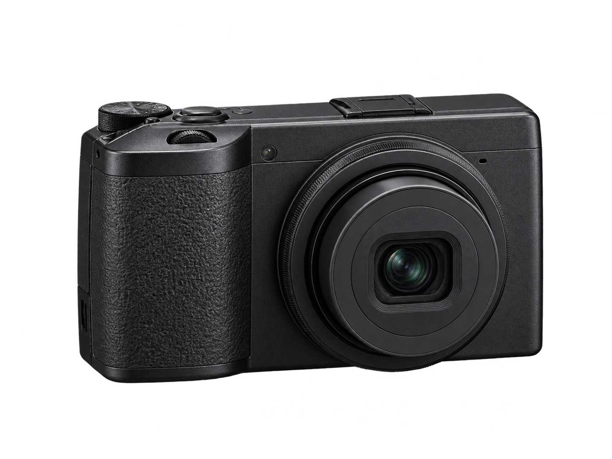

接住每一张灵感
浏览相机照片，按需传到手机。
本机照片也能导入，放进同一条创作流程。
更新及生效日期
本政策适用于 GRemote App 和 GRemote 官网。GRemote 无需注册账号。相机控制、相册整理和照片编辑在手机与相机之间或在手机本地完成。GRemote 不会将你的照片、取景画面或机内设置上传到开发者服务器。
官网不要求登录，也不在页面中植入广告跟踪脚本。网站服务器会生成常规访问日志，可能包括 IP 地址、访问时间、请求路径和浏览器信息，用于维护、安全和故障排查，按服务端日志轮转设置保留。访问 GitHub、M10V 官网等外部链接后，相应服务按其各自的隐私规则处理请求。
如果你主动发送邮件或提交 GitHub 问题，我们会使用你提供的联系方式、描述或附件来处理反馈。GitHub 问题可能公开显示。涉及隐私的请求请通过邮件发送，避免在公开问题中附上个人照片、位置或配对文件。
你可以在系统设置中撤回相册、位置、蓝牙或本地网络等权限。应用内保存的草稿、偏好和缓存由设备保存，可通过相应的应用功能或系统存储设置清理。已保存至系统相册、导出至文件或写入相机的内容，可在相应位置单独删除。
如果你希望查询、更正或删除主动提供给我们的反馈资料，可通过下方邮箱提出请求。我们会在处理反馈所需的期间保留相关资料，并在适用法律要求保留的范围内处理删除请求。
关于本政策、权限或数据处理的问题，请联系 izhaoo@163.com。政策更新会在此页面公布。
遇到相机连接、照片传输、暗房导出或 M10V 联动问题，可以邮件联系 izhaoo@163.com，也可在 GitHub 提交问题。
反馈时请附上 GRemote 版本、手机系统版本、相机型号和固件版本，以及问题发生前的操作。请先从截图或日志中移除个人信息和相机凭据。
从按下快门，到一张喜欢的照片。
连接你的 GR，收好每一次灵感。
导入、遥控、修图，在手机上接着创作。

01 / YOUR POCKET DARKROOM
一张照片的创作，不止于快门。
从明暗与曲线，到胶片质感，慢慢调成你的样子。
基础调整 · 裁切 · LUT · 曲线 · 颗粒 · 漏光 · 画框
配图与界面均为示意 / 本机处理 · 导出新副本02 / FROM CAMERA TO CAMERA ROLL
连接 GR，遥控拍摄，传回喜欢的画面。
也可以直接从手机相册开始。
浏览相机照片，按需传到手机。
本机照片也能导入，放进同一条创作流程。
Wi-Fi 实时取景，调整拍摄参数。
对焦与快门独立操作，拍摄节奏由你掌握。
在暗房中完成调色与画框。
导出新的 JPEG 副本，保留原始照片。
03 / BETTER TOGETHER
连接兼容的 M10V 固件，管理机内胶卷与扩展设置。
从手机到 GR，让创作的手感连起来。
可选联动功能 · 需兼容的 M10V 固件
START SIMPLE
下载 Android 版，安装后按需授予蓝牙、附近设备与相册权限。
连接 GR III 的 Wi-Fi，或直接从手机相册选择照片。
选择喜欢的色彩，调整细节，导出属于你的作品。
在相机上开启蓝牙与无线 LAN，按应用提示连接；也可先在系统设置中接入相机 Wi-Fi。相机网络不提供互联网，请保持连接后返回 GRemote。附近设备、蓝牙与相册权限按使用功能授予。
当前提供 Android 8.0+ 的 arm64 安装包，主要适配 RICOH GR III；iOS 尚未开放下载。M10V 装卷与扩展为可选功能，需要兼容固件及应用识别的机身能力，不代表所有 GR 型号均可使用。手机色彩为官网 RGB 预览近似，800T、Charmera、Pixel World 暂不可用于手机修图。
v1.2.3 沿用 v1.0.1 的正式签名。v1.0.0 与开发 debug 版签名不同，不能直接覆盖；请先导出重要作品、配方与记录，再处理旧安装。正式 APK 的设备兼容性与完整创作流程仍需真机验收，详见发布说明。
WHAT’S NEW
TAKE IT WITH YOU